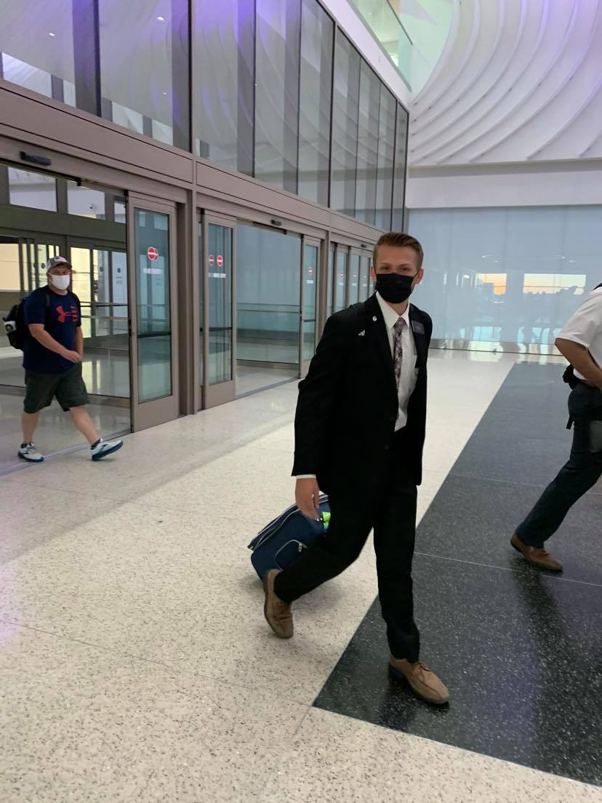

I am from Farmington Utah. I love the outdoors and everything to do with nature. Hunting, fishing, hiking, and camping. I come from a family of 6. With my parents we are 4 brothers. My Dad served a mission in Sau Paulo brazil and my older brother served his mission in Seattle washington. I served my mission during the Covid 19 pandemic so I started in Chihuahua Mexico, was reassigned to Yakima Washington, and then sent back to mexico. My little brother is currently serving in the Mexico City East mission. During my youth I participated in Rodeos and learned how to play the saxophone which I continue playing to this day. I love food, cooking, and eating. Cleaning up the mess not as much.
